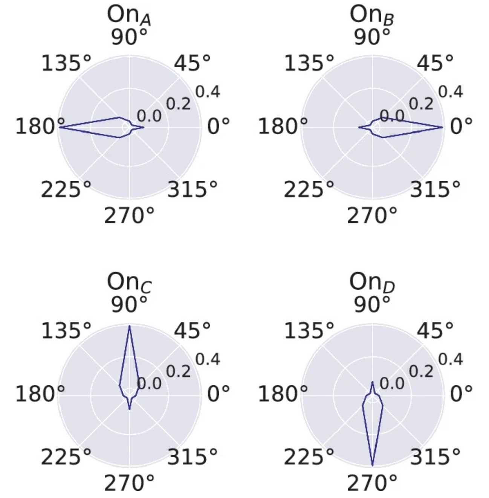
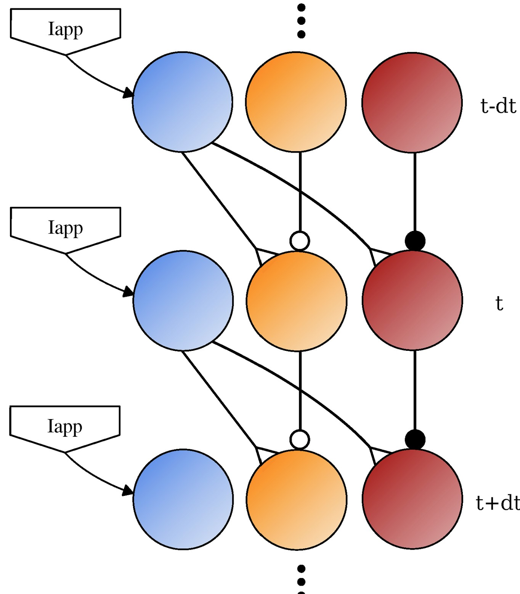
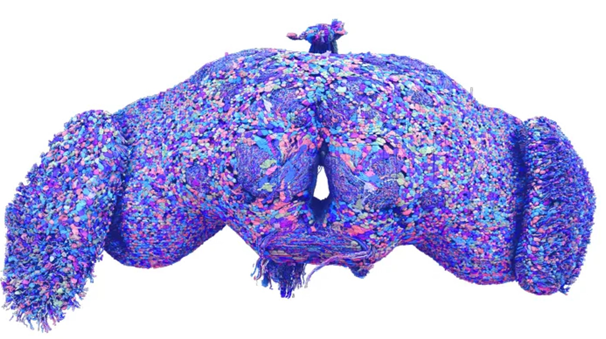

Research
A selection of some of my work. For a complete listing, please consult my Google Scholar page.
|
|

|
A Synthetic Nervous System for on and Off Motion Detection Inspired by the Drosophila melanogaster Optic Lobe
William Nourse, Nicholas Szczecinski, Roger Quinn
Biomimetic and Biohybrid Systems, 2023
In this work, we design and simulate a synthetic nervous system which is capable of computing optic flow throughout a visual field, inspired by recent advances in the neural anatomy of Drosophila melanogaster found through connectomics. We present methods for tuning the network for desired stimuli, and benchmark its temporal properties and capability for directional selectivity. This network acts as a stepping point towards visual locomotion control in a hexapod robot inspired by the anatomy of Drosophila.
|
|

|
SNS-Toolbox: An Open Source Tool for Designing Synthetic Nervous Systems and Interfacing Them with Cyber–Physical Systems
William Nourse, Clayton Jackson, Nicholas Szczecinski, Roger Quinn
Biomimetics, 2023
We present our open-source Python package SNS-Toolbox, which is capable of simulating hundreds to thousands of spiking and non-spiking neurons in real-time or faster on consumer-grade computer hardware. We describe the neural and synaptic models supported by SNS-Toolbox, and provide performance on multiple software and hardware backends, including GPUs and embedded computing platforms. We also showcase two examples using the software, one for controlling a simulated limb with muscles in the physics simulator Mujoco, and another for a mobile robot using ROS.
|
|
|
A perspective on the neuromorphic control of legged locomotion in past, present, and future insect-like robots
Nicholas Szczecinski, Clarus Goldsmith, William Nourse, Roger Quinn
Neuromorphic Computing and Engineering, 2023
In the near future, we expect to see hexapod robots whose controllers include neuromorphic organization, computational units, and hardware. Such robots may exhibit the full mobility of their insect counterparts thanks to a 'biology-first' approach to controller design. This perspective article is not a comprehensive review of the neuroscientific literature but is meant to give those with engineering backgrounds a gentle introduction into the neuroscientific principles that underlie models and inspire neuromorphic robot controllers.
|
|
|
SNS-Toolbox
A Python package for the large-scale efficient simulation of Synthetic Nervous Systems (SNS), which is capable of simulating hundreds to thousands of spiking and non-spiking neurons in real-time or faster on consumer-grade computer hardware.
|
|

|
Towards Insect-Scale Intelligence for Robotics
NIH BRAIN NeuroAI Workshop, Bethesda, MD, 2024
With modern advances in control theory and AI, modern robots are capable of performing nearly any individual task, from climbing ladders to folding laundry. Looking ahead, how can we design systems which can not only perform a variety of tasks, but also decide which tasks to do using context-dependent decision-making? How can we do this using only onboard computation, without relying on the cloud? We currently have a connectome of all the neurons in the brain and ventral nerve cord of the fruit fly, and these animals are able to achieve a wide range of behaviors while autonomously switching between them based on both internal and external states. For these reasons, the insect nervous system is a prime template for creating autonomous machines. However, further work is needed before this will be possible. More connectomic information is needed, both in terms of detection resolution and across multiple individuals. Additionally, connectomes of insects with more sophisticated behavior such as mantises would help understand how these regions scale with intelligence. Moving beyond point-to-point graphs, dendritic and axonic structure may be necessary for some computations. Finally, more neuromorphic hardware is needed which can simulate millions of neurons while being easy to physically obtain.
|
|
{kind=link}